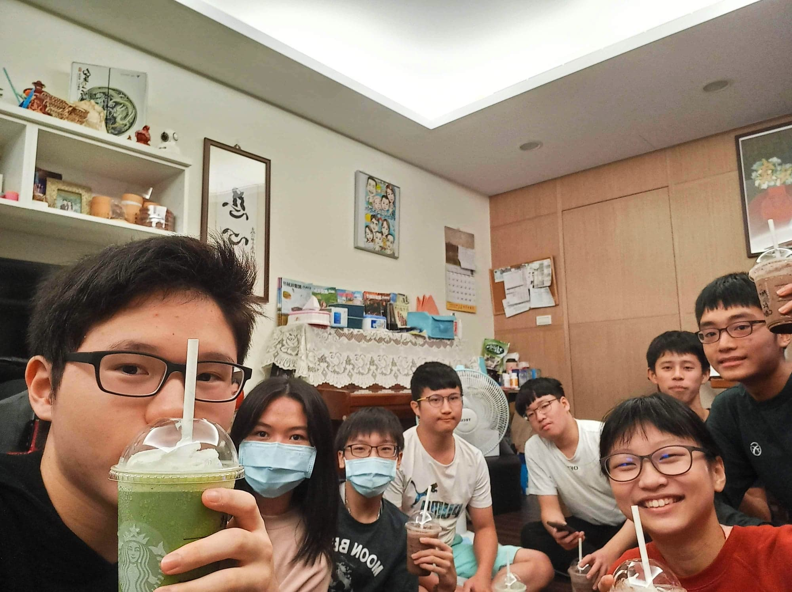

話說雖然之前常常一起出去，但合照卻少的可憐
一直很喜歡這張合照
高二的時候在大稻埕拍的合照，不久就遇到了疫情還有準備考試
幸好那時候就有先去啦
好像還記得你那時候問我:為什麼沒有跟其他人提到我們去大稻埕?
我那時候超難回答的，現在你知道了吧

最後呢，我想要說的是
其實打算告白時，我一直很擔心告白後的我們會變得怎麼樣
會不會連朋友都當不成、我們這群該怎麼辦?
但如果不說，我想我一定會後悔吧!
不論最後的結果如何
我希望我們這一群還是能夠一樣，一起瘋，一起鬧
就算失敗了我也會好好放下的
而你也要繼續喜歡棒球
總有一天，我們球場上見
嗨楊子芸
當你看到篇文時，代表這想法我在心中已經跑過無數次for迴圈，終於決定break出來
我知道我不擅長當面表達感情
那想說就用一個特別的方式來表達吧
你還記得高一時我曾說過
喜歡一個人就一定要馬上告白嗎?
我覺得放在心中關心對方更重要
沒錯 我喜歡你
不過這種喜歡，我並沒有馬上就發覺出來
但就是會不知不覺在乎你、記得你講過的事情、想要多陪跟你相處
也許我們因為國中有一段關係，所以一開始我會比較避諱這種情感
時間久了，我終究還是騙不了自己
承認我就是喜歡你
我還記得
你在要升高中的暑假，意志堅決的說 ：我高中決定不談戀愛，要好好拚大學!
沒想這句話，也影響到我高中的三年
高中剛開始的我們
面臨一堆不順遂，給彼此鼓勵，因為會考不理想的成績想要在高中翻盤
我們開始晚上跑步、丟球，一起分享心事抒發壓力
後來遇到口評帶的學弟妹，能夠一起感受學長姐與學弟妹的關係
最讓我印象深刻的就是
我的生日明明就在段考當天，你卻跑來買蛋糕給我幫我慶生
同樣的你生日，我也是被留學校到很晚衝去幫妳慶生
高中許多的回憶 都有你
高中那段時間，你既然已經下定決心不談感情
而告白後未來會過怎麼樣我也不能掌握
那我能做的，就是珍惜彼此相處的時間
老實說，高一高二每次聊天或見面完，心情就會變很好
高三開始彼此準備考試，連聊天的機會都很少
那段時間還滿煎熬的，你先有了學校，換我開始拚
當我有了學校時，你已經開始有自己的暑假規劃
現在我們也不像以前那麼常聊天
感覺真的挺奇怪的，不過至少我把我的心意讓你知道了
謝謝你 楊子芸
換個角度想，你的陽明，我的台科，這三年我們真的不一樣了
我可以想像回去龍門看口評跟峻豪的那種感覺!
另外請不要把這篇文和這件事，讓我們這群的男生知道
我也從來沒跟他們提過這件事，這篇文是我很感性的一面哈哈
等過了一段時間，我也許自然就會講了